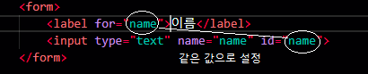
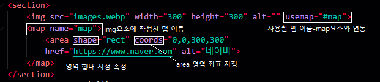

label의 for 속성과 input의 id 속성을 동일한 값으로 주고 label 요소를 클릭하면 자동으로 input태그에 초점이 됩니다.
form>lebel for=" = input id=" 동일한 속성으로 값을 주면 자동으로 연결됩니다.
form> textarea rows="" cols=""
multiple 속성 : 여러개를 선택하고 싶을 때 사용합니다
size 속성 : 화면에 표시되는 목록을 나타냅니다.selected 요소를 적용함
selected 속성 : selected 속성을 적용하여 기본 선택으로 변경할 수 있습니다.이미지 위에 클릭할 수 있는 영역을 그려놓은 도면입니다.
이미지 맵을 만들려면 img, map, area 요소가 필요합니다.
map요소의 역할은 img와 area요소를 연결시키는 것입니다.
section> img src="" width="" height="" alt="" usemap="#사용할 맵 이름"
map name="사용할 맵 이름"
Area 요소 : 이미지 맵 내부에 링크 영역을 지정하는 요소입니다. 반드시 map요소와 함께 사용합니다.shape속성 : 링크 영역의 형태를 지정하는 속성, 원형 사각형, 다각형으로 표시할 수 있습니다
coorsds속성 : area 요소의 영역 좌표를 지정합니다. (x,y 축을 사용합니다)
shape="rect" 사각형
shape="circle" 원형
shape="default"링크 영역을 기본 상태로 지정 (이미지 전체를 링크 영역으로 지정)
